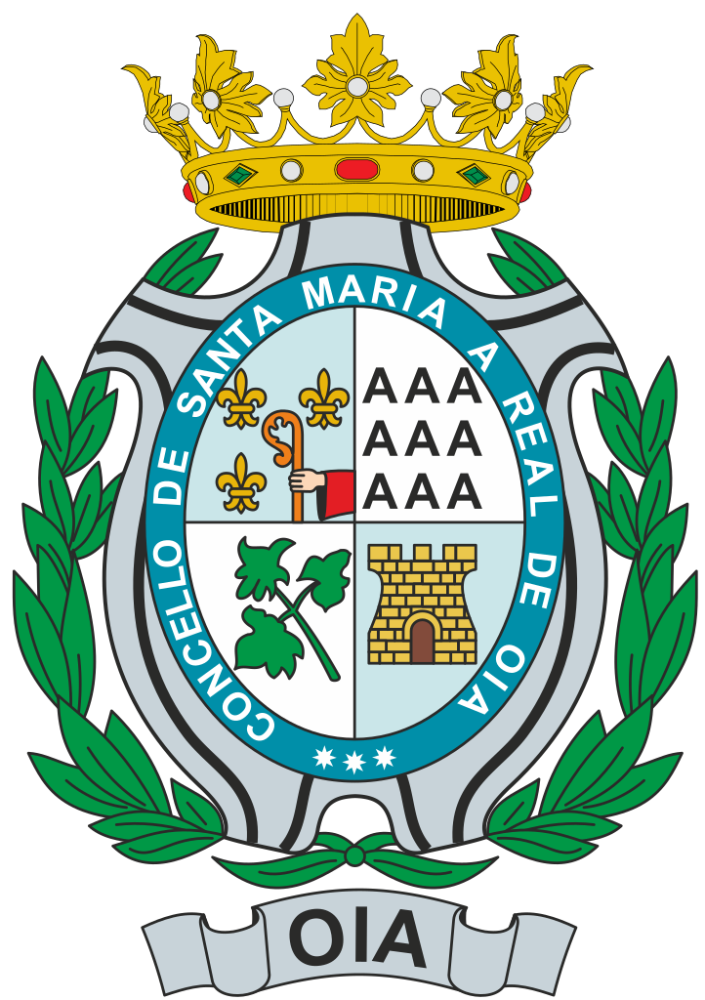
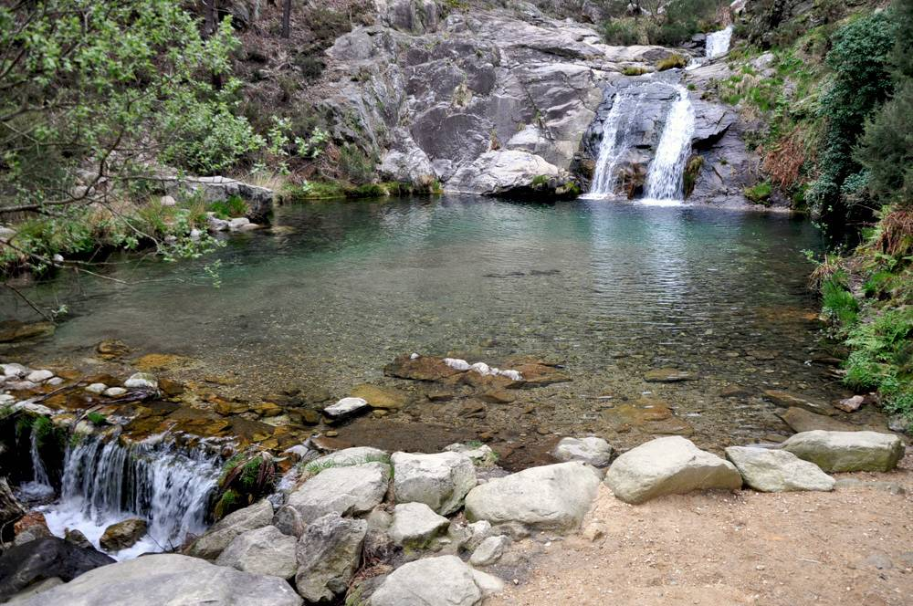

Falemos sobre Oia
Oya (en gallego y oficialmente Oia)es un municipio ubicado en el litoral meridional de la provincia de Pontevedra. Forma parte de la comarca del Bajo Miño. Tiene una población de 3.018 habitantes (según los datos del INE) del año 2018. Lo rectilíneo de la costa se debe a la existencia de una falla que  corta nítidamente todos los relieves perpendiculares a la costa formando lo que en geología se denomina como facetas triangulares (puede verse una de ellas justo detrás del campanario de la iglesia en la imagen) que corresponden a un espejo de falla normal, en la que el lado deprimido se encuentra al pie del mismo, del lado de la costa. Por su parte, el lado levantado forma una fila montañosa también de norte a sur (Serra da Groba), que desciende en forma suave desde el norte (cerca de Bayona) en el Alto da Groba (662 msnm), hacia el sur dando origen a una especie de estrechamiento del estuario del Miño, justo en la desembocadura. Y en la parte oriental de esta fila montañosa, el relieve desciende hacia una depresión tectónica surcada por dos ríos: el río Da Groba hacia el norte, que desemboca en Bayona, y el río Tamuxe hacia el sur, que desemboca en el Miño ya cerca de su desembocadura.
La vegetación está formada por pinos, eucaliptos (plantados) y plantas de menor tamaño. En todo el municipio (como en otras partes de Galicia) se crían grupos de caballos que pastan libremente en la zona montañosa de la Serra da Groba. De la Edad del Bronce se han encontrado relieves y pinturas rupestres en los montes orientados hacia la costa. Hay abundantes restos de castros levantados por los celtas, principalmente, el yacimiento arqueológico de Bouza Fariña, en Mougás, en el cual se encontró un altar de sacrificios que ahora se encuentra en el Museo Arqueológico de Pontevedra. Y en Viladesuso hubo una villa romana con una ara que actualmente se encuentra en el Museo Diocesano de Tuy.
Sin embargo, la historia de Oya comenzó a girar en torno al Monasterio de Santa María de Oya, fundado por Alfonso VII en 1132 como abadía, siendo su primer abad Pedro de Incio. En 1185 adoptó la reforma cisterciense, sometiéndose a la abadía de Claraval la cual se incorporó en 1547 a la congregación cisterciense de Castilla. Dicho monasterio fue desamortizado y vendido a particulares en 1835, cuando la iglesia del monasterio se convirtió en iglesia parroquial.
Visita as pozas de Oia

Las Pozas de Mougás son uno de los atractivos turísticos más importantes de toda la provincia de Pontevedra. Normalmente, son un punto obligatorio para todas las personas que visitan Galicia, ya que tienen aguas cristalinas y limpias que permiten que los niños se bañen sin ningún tipo de peligro.
En verano, las pozas se convierten en lugar donde poder disfrutar de un baño y, además, cerca del Rego das Pías, se localiza un área recreativa formada por un buen número de mesas y alguna fuente. Además, las temporadas lluviosas también son una buena época para disfrutar de estos parajes, ya que la abundancia de agua forma verdaderas maravillas de la naturaleza.
Es recomendable intentar ir temprano para coger sitio y disfrutar de un baño sin demasiado agobio, ya que dependiendo de la hora y del día en el que vayáis, es posible que encontréis bastante gente. Así que, es mejor ir un día de principio de verano por la mañana y disfrutar de una buena comida rodeado de la naturaleza.